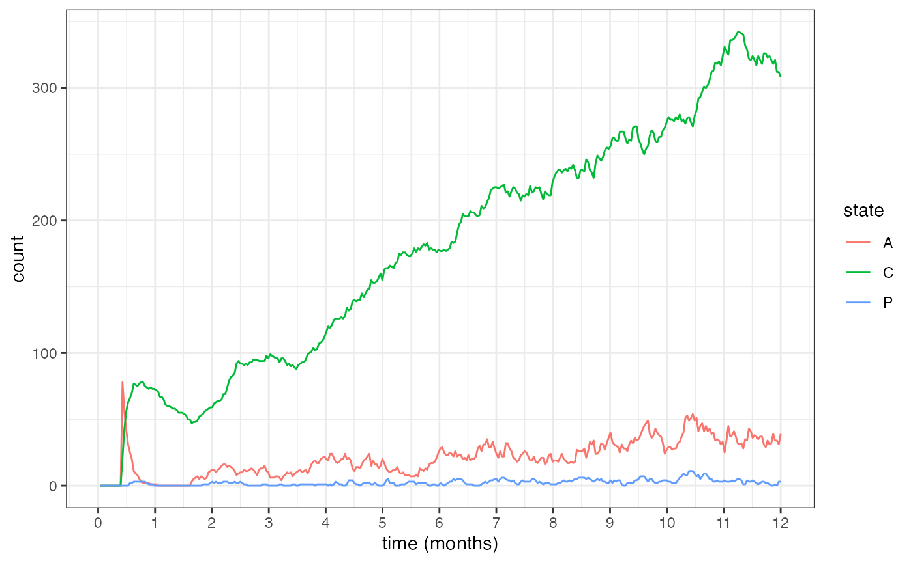
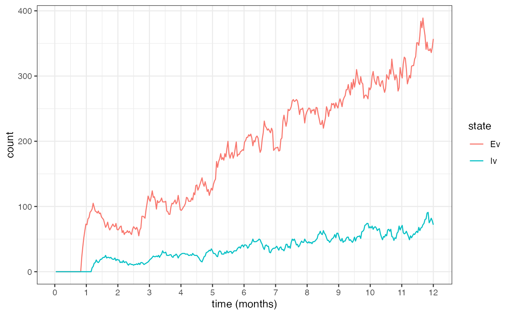
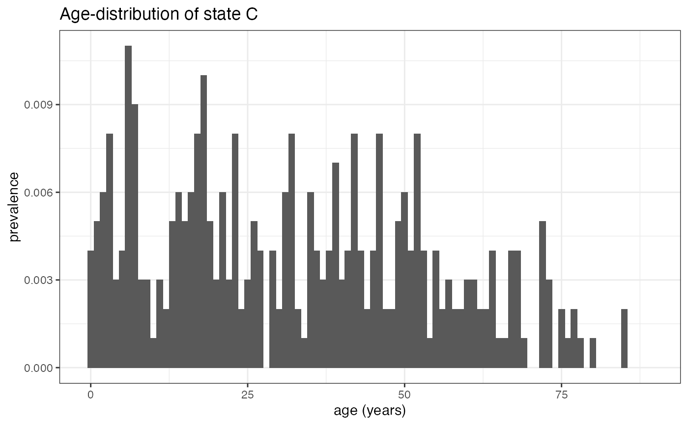
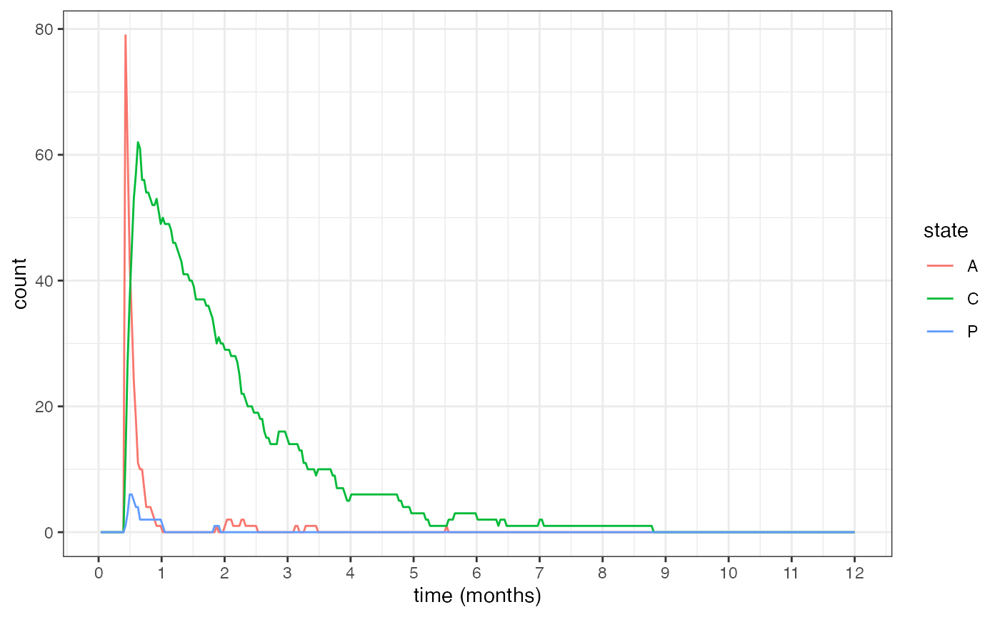
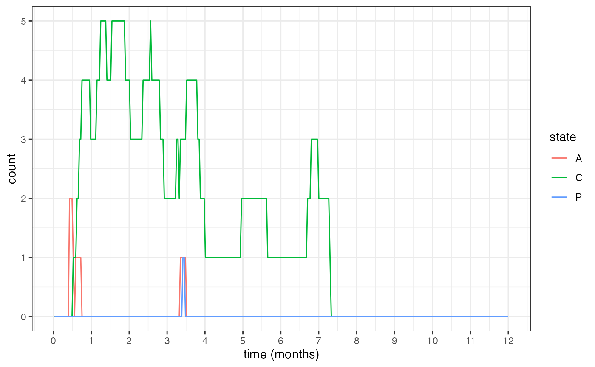
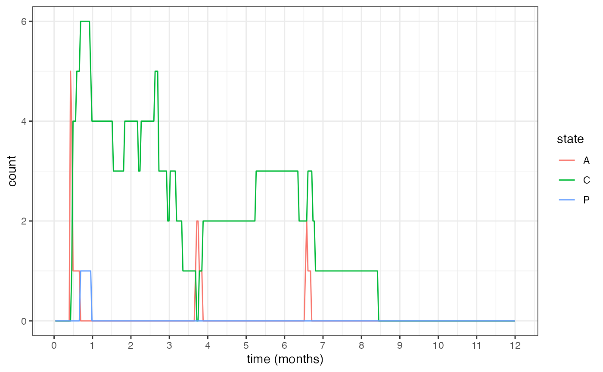

This tutorial goes through the basic process of creating a SIMPLEGEN project and running the inbuilt epidemiological simulator.
Running a basic simulation
SIMPLEGEN works with projects, which are essentially just lists that hold all inputs and outputs in a single convenient place. We start by creating a new project and specifying the parameters of the epidemiological model - see ?define_epi_params for a complete list of model parameters and default values.
myproj <- simplegen_project()
myproj <- define_epi_params(myproj,
H = 1e3,
M = 1e4)Alternatively, if you are familiar with the pipe operator %>% from the dplyr package then you can use this to chain together multiple commands:
library(dplyr)
myproj <- simplegen_project() %>%
define_epi_params()Taking a quick look at our project we will see a summary of the current setup:
myproj
#> Epidemiological model:
#> demes: 1
#> H: 1000
#> M: 10000
#> seed infections: 100A good way of sanity-checking our model before running simulations is to use some of the inbuilt plotting functions to explore our assumed distributions. For example, we can look at the assumed distribution of time in the acute state as follows:
plot_epi_distribution(myproj, name = "duration_acute")
Once we are happy with our assumptions we are ready to run the epidemiological simulation. Note that the argument pb_markdown = TRUE is used here just to avoid cluttering this tutorial with too much output, but you should run the model without this argument.
myproj <- sim_epi(myproj, pb_markdown = TRUE)
#> Running simulation
#>
|
|======================================================================| 100%
#>
#> completed in 0.030627 secondsLooking at the project again we now see that we have some results:
myproj
#> Epidemiological model:
#> demes: 1
#> H: 1000
#> M: 10000
#> seed infections: 100There are custom functions within SIMPLEGEN for exploring model output (see below), or we can dig into the output manually using the $ symbol, for example myproj$epi_output$daily_values.
Plotting results
One of the most basic plots that we might be interested in is the daily number of hosts in each state. We can specify the states that we want to plot as an input vector:
plot_daily_states(myproj, states = c("A", "C", "P"))
This is also true of mosquito states, which are suffixed with “v”:
plot_daily_states(myproj, states = c("Ev", "Iv"))
In addition to storing daily counts in each state, the sim_epi() function takes a slice of the population at various times, allowing us to plot age-distributions at these points in time. The sampling times are specified by the argument output_age_times, which defaults to the final timepoint only. Hence, we can plot:
plot_age_states(myproj, state = "C")
Multiple demes and migration
SIMPLEGEN allows for multiple sub-populations (demes), which can be perfectly isolated or connected by migration. First, we specify the human and mosquito population sizes in each deme by using a vector of values for H, M, and seed_infections. Second, we specify a migration matrix giving the daily probability of each human moving from the source deme (rows) to the destination deme (columns).
# define parameters over multiple demes
n_demes <- 3
H <- rep(1e3, n_demes)
seed_infections <- c(1e2, 0, 0)
M <- c(1e3, 2e3, 3e3)
# define a migration matrix
m <- 0.01
mig_mat <- matrix(m / n_demes, n_demes, n_demes) + diag(1 - m, n_demes)
# load new paramters into the model
myproj <- define_epi_params(myproj,
H = H,
seed_infections = seed_infections,
M = M,
mig_mat = mig_mat)We then run the simulation as normal:
myproj <- sim_epi(myproj, pb_markdown = TRUE)
#> Running simulation
#>
|
|======================================================================| 100%
#>
#> completed in 0.088546 secondsNow when plotting results we can use the deme argument to specify which deme to plot:
plot_daily_states(myproj, states = c("A", "C", "P"), deme = 1)
plot_daily_states(myproj, states = c("A", "C", "P"), deme = 2)
plot_daily_states(myproj, states = c("A", "C", "P"), deme = 3)
In the example above there are three demes, with only the first containing infected hosts initially. As time progresses we see infections seed into the other two demes via migration.